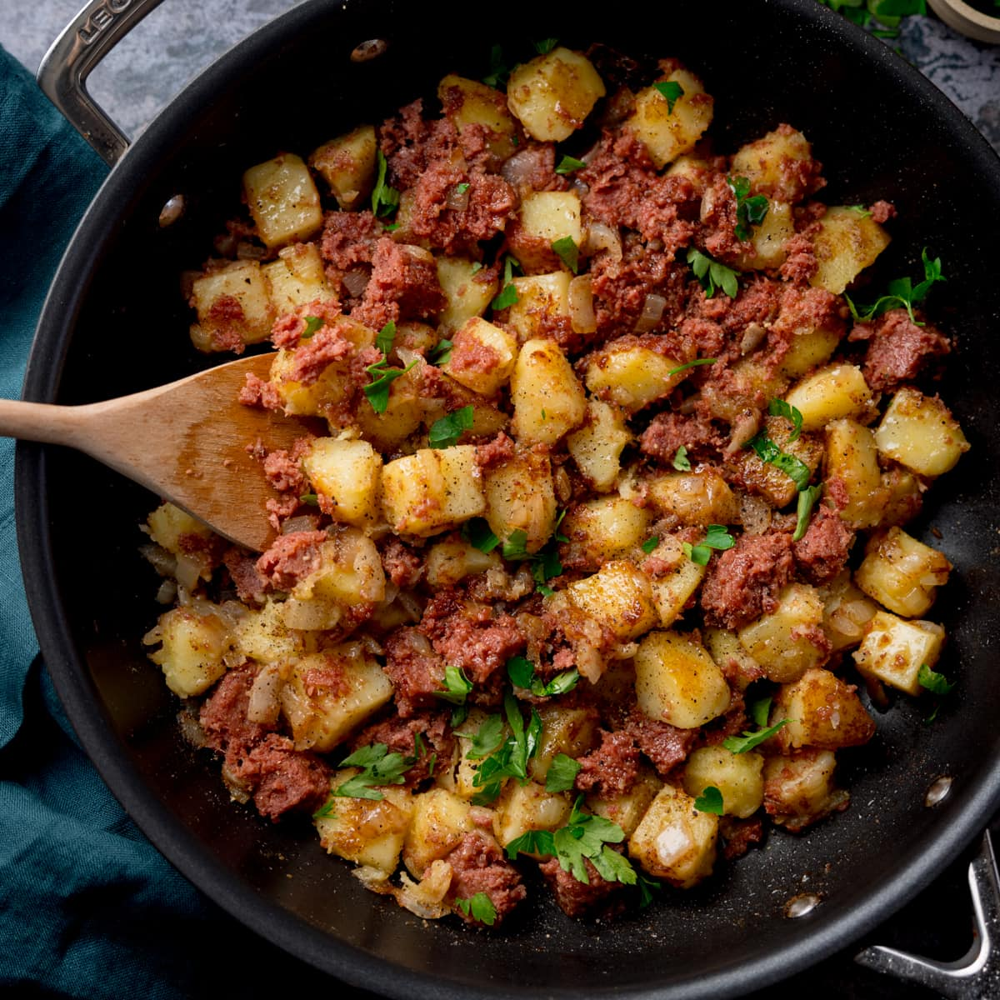

Cheesy Garlic Omelette
Fluffy omelette with cheddar, herbs, and a hint of garlic.
0 min
Cheesy Garlic Omelette
Fluffy omelette with cheddar, herbs, and a hint of garlic.
Ingredients
- 3 eggs
- 2 tbsp shredded cheddar
- 1 tbsp butter
- 1 clove garlic, minced
- Salt & pepper to taste
- Chopped chives (optional)
Process (Step-by-step)
- Beat eggs with salt and pepper. 3 min
- Melt butter in a nonstick pan; sauté garlic briefly. 2 min
- Pour eggs, cook until just set; add cheddar. 5 min
- Fold omelette; rest and garnish with chives. 1 min
Total time: 0 min

Classic Pancakes
Light, fluffy pancakes with maple syrup.
0 min
Classic Pancakes
Light, fluffy pancakes with maple syrup.
Ingredients
- 1 cup all-purpose flour
- 2 tbsp sugar
- 1 tsp baking powder
- 1 egg
- 3/4 cup milk
- 1 tbsp butter (melted)
- Pinch of salt
Process (Step-by-step)
- Whisk dry ingredients; add wet and mix until just combined. 5 min
- Preheat pan and lightly butter. 2 min
- Cook pancakes in batches (flip once when bubbles form). 6 min
Total time: 0 min

Acai Breakfast Bowl
Made with the frozen and mashed fruit of the açaí palm
0 min
Acai Breakfast Bowl
Made with the frozen and mashed fruit of the açaí palm
Ingredients
- Two 4-ounce packets unsweetened frozen acai puree
- 1 banana
- 1/2 cup blueberries
- 1 tablespoon honey
- 3 tablespoons granola
- 2 tablespoons pomegranate seeds
- 1 tablespoon unsweetened coconut flakes
Process (Step-by-step)
- Break the frozen acai up a little by slapping the sealed packets on the countertop or hitting them with a meat mallet. 2 min
- Blend the berries with 1/2 the banana, 1/4 cup of the blueberries and the honey in the blender 2 min
- When it's consistency is like a thick smoothie; transfer to a cereal bowl. 1 min
- Slice the remaining 1/2 banana. Arrange the slices, the remaining 1/4 cup blueberries, granola, pomegranate seeds and coconut flakes in neat piles or rows on top of the acai. 2 min
Total time: 0 min

Corned Beef Hash
Hearty dish made from chopped corned beef, potatoes, and onions
0 min
Corned Beef Hash
Hearty dish made from chopped corned beef, potatoes, and onions
Ingredients
- 2 tablespoons vegetable oil
- 8 ounces cooked corned beef, diced
- 1 white onion, finely chopped
- 1 bell pepper, finely chopped
- 2 cups potatoes, peeled/shredded
- 4 tablespoons unsalted butter
- 4 large eggs
- Pinch of salt and ground pepper
- 4 eggs
- 4 slices cheddar cheese
Process (Step-by-step)
- Heat the oil in a medium skillet over high heat 3 min
- Add the corned beef and cook, stirring until it releases some fat and browns slightly 3 min
- Stir in the onion, bell pepper and potatoes and cook, undisturbed, until brown and crisp on the bottom 6 min
- Continue cooking, turning the hash as it browns evenly 15 min
- Place the cheese slices on top of the hash, reduce the heat and let sit until the cheese melts 1 min
- heat the butter in a nonstick skillet over medium-high heat 3 min
- Fry the eggs and season with salt and pepper. 5 min
- Top each portion of hash with a fried egg. 1 min
Total time: 0 min

Breakfast Burritos
hand-held meal consisting a variety of hot breakfast fillings wrapped around a flour tortilla
0 min
Breakfast Burritos
hand-held meal consisting a variety of hot breakfast fillings wrapped around a flour tortilla
Ingredients
- 2 medium tomatillos
- 1 jalapeno pepper
- 1 small red onion, quartered
- 2 cups roughly chopped fresh cilantro
- 1 lime
- 4 ounces dried chorizo, thinly sliced
- 3 1/2 cups diced brown potatoes
- 4 eggs
- 16-ounce can beans
- 4 10-inch flour tortillas, warmed
- 1 cup shredded mozzarella cheese
- salt and ground pepper
Process (Step-by-step)
- Preheat the broiler 5 min
- Put the tomatillos, jalapeno and red onion on a baking sheet and broil, until tender and charred in spots 10 min
- Transfer the vegetables to a blender and add the cilantro, lime juice, 1/4 cup water, 3/4 teaspoon salt and a few grinds of pepper; puree until smooth. 5 min
- Cook the chorizo in a large nonstick skillet over medium-high heat, stirring occasionally, until crisp, 2 min
- Add the potatoes to the drippings in the skillet; cover and cook, stirring halfway through, until golden brown and warmed through 10 min
- Add to the bowl with the chorizo and stir. 2 min
- Add the eggs to the skillet and cook over medium heat, stirring, until scrambled 2 min
- Transfer to a bowl and cover. Wipe out the skillet and add the beans; warm through 2 min
- Season with salt and pepper. Spread the beans in the center of each tortilla and top with the potatoes, chorizo, eggs and cheese. 5 min
- Fold the bottom edge of the tortilla over the filling, then fold in the sides and roll up. Serve with the tomatillo salsa. 5 min
Total time: 0 min

Breakfast Casserole
Oven-baked dish made with eggs, cheese, and various other breakfast foods
0 min
Breakfast Casserole
Oven-baked dish made with eggs, cheese, and various other breakfast foods
Ingredients
- 10 tablespoons salted butter
- 8 onion rolls
- 1/4 cup sliced roasted red peppers
- 8 ounces cream cheese
- 1 cup grated mozzarella
- 2 cups milk
- 3 tablespoons basil pesto
- 1 tablespoon chopped fresh parsley
- 1 teaspoon chopped fresh oregano
- 1/2 teaspoon salt
- 1/4 teaspoon freshly ground black pepper
- 10 eggs
Process (Step-by-step)
- Generously butter a 9-by-13-inch baking dish 5 min
- Tear the onion rolls into chunks and place them in the bottom of the baking dish. 2 min
- Sprinkle the roasted peppers on top, then tear the cream cheese over the peppers. 2 min
- Sprinkle with the mozzarella, then cut the butter into pats and scatter over the top. 3 min
- Mix together the milk, pesto, parsley, oregano, salt, pepper and eggs in a large bowl and pour slowly over the top of the dish, making sure to get it all around and into the crevices. 5 min
- Wrap tightly with plastic wrap, then foil and refrigerate 30 min
- To cook from frozen: Preheat the oven to 350 degrees F. 5 min
- Remove the foil and plastic wrap, then re-cover the casserole with the foil and Bake 45 min
- Remove the foil and continue baking until firm and set, 10 min
Total time: 0 min

Name
Describe
0 min
Name
Describe
Ingredients
Process (Step-by-step)
- 5 min
- 2 min
- . 6 min
Total time: 0 min

Name
Describe
0 min
Name
Describe
Ingredients
Process (Step-by-step)
- 5 min
- 2 min
- . 6 min
Total time: 0 min

Name
Describe
0 min
Name
Describe
Ingredients
Process (Step-by-step)
- 5 min
- 2 min
- . 6 min
Total time: 0 min

Name
Describe
0 min
Name
Describe
Ingredients
Process (Step-by-step)
- 5 min
- 2 min
- . 6 min
Total time: 0 min